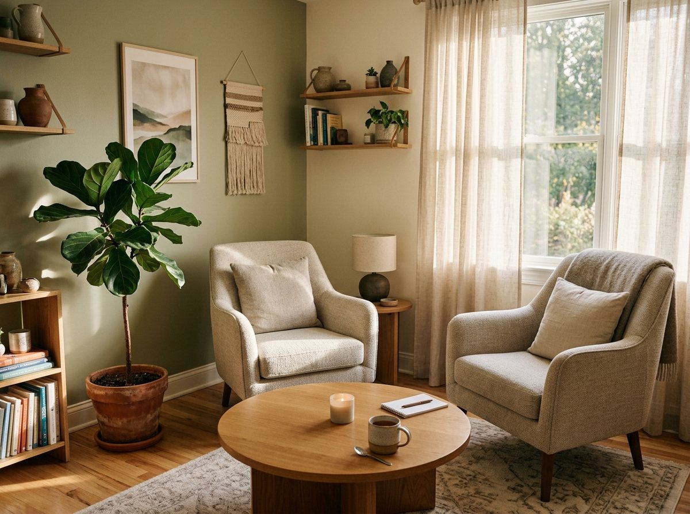

Birra não é manipulação: o que a neurociência ensina sobre a raiva infantil
Entenda por que o cérebro da criança pequena ainda não tem maturidade biológica para se autorregular e como acolher a frustração sem ceder ao pedido.
Com limites, com afeto. Uma orientação prática, humanizada e acolhedora para pais e mães que desejam construir respeito mútuo, compreender as birras e recuperar a paz na rotina familiar — sem culpas, sem gritos e sem permissividade.
A infância não vem com manual de instruções, e você não precisa carregar essa sobrecarga em silêncio.
Momentos de choro intenso onde nada parece acalmar a criança, deixando você sem chão e temendo os olhares de julgamento em público.
O medo constante de ser permissivo demais e "estragar" a criança, ou de ser rígido demais e ferir a relação e a autoestima do seu filho.
Prometer a si mesmo que terá paciência pela manhã, mas terminar o dia gritando por exaustão e deitando a cabeça no travesseiro com culpa.
Dificuldades no desfralde, no desmame, na retirada da chupeta, na hora de dormir ou em desligar as telas sem um grande combate.
O Apoio Parental é uma consultoria e mentoria clínica direcionada aos pais e cuidadores. É um espaço seguro onde olhamos para a dinâmica específica da sua casa para desenhar soluções reais e sustentáveis.
Em uma conversa profunda com os pais (online ou presencial), compreendemos a rotina da família, a personalidade da criança, as dificuldades recorrentes e as tentativas que já foram feitas.
A criança comunica o que sente através do comportamento. Traduzimos juntos o que está por trás da birra, da recusa ou da agressividade: imaturidade neurológica, necessidade de conexão ou sobrecarga sensorial.
Construímos estratégias sob medida: como estabelecer limites inegociáveis com serenidade ("dedo apontado vs mão estendida"), como antecipar transições e como organizar rotinas que façam sentido para a sua realidade.
Você não sai apenas com teorias: recebe materiais de apoio exclusivos (disponíveis na Área do Cliente) e conta com sessões de acompanhamento para calibrar os resultados e consolidar uma relação de paz.
Dê o primeiro passo para uma criação baseada em respeito mútuo. Agende sua sessão de Apoio Parental diretamente com a psicóloga Bárbara Maglia.

Antes de ser mãe, pai ou profissional, você é uma pessoa com sua própria história, dores e desejos. A psicoterapia é o seu momento de respirar, se escutar e reorganizar o seu mundo interno.
Uma abordagem humanista focada no aqui e agora. Não nos prendemos apenas aos diagnósticos, mas a como você vive suas relações, reconhece seus limites corporais e emocionais e resgata sua espontaneidade.
Acolhimento específico para os abalos emocionais do pós-parto, a crise de identidade na maternidade, o luto da mulher que você era e a construção do seu novo papel com compaixão.
Atendimento estritamente regulamentado pelo Conselho Federal de Psicologia (CRP 07/29031), oferecendo um ambiente livre de julgamentos, com sessões semanais de 50 minutos.
Entenda claramente as diferenças entre cada abordagem para dar o passo certo na sua jornada.
| Critério |
Mais Procurado
🌱 Apoio Parental
Foco na relação pais e filhos
|
🛋️ Psicoterapia Individual
Foco no seu mundo interno
|
|---|---|---|
| Qual é o objetivo central? | Resolver dinâmicas comportamentais, birras, rotina e limites na criação dos filhos. | Trabalhar angústias pessoais, ansiedade, autoconhecimento, traumas e regulação emocional própria. |
| Quem participa das sessões? | A mãe, o pai ou ambos os cuidadores (a criança não precisa participar). | Exclusivamente o paciente individualmente. |
| Como é a estrutura? | Focada em objetivos pontuais, mapeamento de rotina e ferramentas práticas. | Processo contínuo e profundo de autodescoberta e elaboração psíquica. |
| Duração típica | Ciclos breves e direcionados (conforme a necessidade da queixa familiar). | Acompanhamento semanal sem prazo pré-determinado, com evolução contínua. |
| E quando os dois se complementam? |
✨ Muitos pais começam pelo Apoio Parental para resolver urgências com os filhos e, ao perceberem a raiz de suas próprias reações, decidem iniciar a Psicoterapia individual. As abordagens dialogam perfeitamente!
|
|
Selecione a frase que mais reflete o seu sentimento atual:
Sou psicóloga clínica formada no Rio Grande do Sul, com atuação guiada pela Gestalt-terapia e dedicação integral ao Apoio Parental e à saúde mental de mães, pais e famílias.
Também sou escritora e autora do livro infantil "Violeta sem chupeta" (Editora Matrescência), onde trabalho transições da primeira infância com gentileza e respeito ao tempo de cada criança.
Em meu perfil no Instagram (@barbaramaglia) e nos meus atendimentos, busco desmistificar a perfeição parental. Acredito na força do vínculo, no acolhimento das emoções difíceis e na firmeza tranquila que guia sem machucar.
Artigos profundos inspirados nos temas que mais tocam a rotina das famílias.
Entenda por que o cérebro da criança pequena ainda não tem maturidade biológica para se autorregular e como acolher a frustração sem ceder ao pedido.
Existe um abismo entre ser permissivo e ser agressivo. Aprenda a aplicar a postura de "mão estendida em vez de dedo apontado" nos combinados diários.
Quando nasce um bebê, nasce também a expectativa irreal de dar conta de tudo. Por que precisamos urgentemente normalizar o cansaço e o luto da mulher que fomos.
Muito da nossa ansiedade reside em ruminar o passado ou antecipar o futuro. Descubra como a presença e a autorregulação restauram seu eixo vital.
Transformações concretas na convivência, no vínculo e na serenidade do lar.
“O apoio da Bárbara foi um divisor de águas. Estávamos exaustos de gritar e nos sentir péssimos pais todas as noites. Com a orientação dela, aprendemos a manter a calma, sustentar os limites e nossa filha de 3 anos finalmente começou a dormir no quarto dela sem traumas.”
“Comecei a psicoterapia individual com a Bárbara quando meu filho tinha 8 meses. Eu estava à beira do burnout materno. A escuta da Bárbara é de um acolhimento raro. Ela me ajudou a me reencontrar como mulher sem me sentir uma impostora como mãe.”
“A clareza que ela tem sobre o comportamento das crianças nos deu muita segurança. O desfralde do meu filho mais novo parecia impossível, e com o direcionamento calmo e certeiro dela tudo fluiu sem estresse em duas semanas.”
Tudo o que você precisa saber antes de agendar seu atendimento.
Sim, extremamente eficazes! Os atendimentos online são realizados por videochamada em plataforma segura e criptografada (em total conformidade com as normas do CFP). No Apoio Parental, como o trabalho é feito diretamente com os pais e cuidadores, a modalidade online é perfeita e flexível, permitindo que casais participem mesmo estando em locais de trabalho diferentes ou no conforto de casa.
Diferente da psicoterapia clássica contínua, o Apoio Parental é orientado a objetivos pontuais. Muitas famílias resolvem demandas específicas (como desfralde, rotina de sono ou combinados de limites) em 3 a 5 encontros. Casos mais complexos ou transições familiares maiores podem contar com acompanhamento mensal ou quinzenal.
A participação de ambos os cuidadores é muito bem-vinda e recomendada para que haja alinhamento na dinâmica da casa, mas não é obrigatória. Caso apenas a mãe ou apenas o pai tenha disponibilidade, o processo segue com total aproveitamento.
Os atendimentos são particulares. No entanto, fornecemos recibo e nota fiscal completos com CRP 07/29031, os quais você pode enviar ao seu convênio médico para solicitar o reembolso de consultas de psicologia (conforme a cobertura da sua apólice).
Basta clicar em qualquer um dos botões de WhatsApp desta página. Você será direcionado para conversar diretamente com a Bárbara ou com nossa equipe para alinhar horários disponíveis, valores e tirar quaisquer dúvidas preliminares.
Ainda ficou com alguma dúvida sobre seu caso específico?
Tirar dúvidas diretamente no WhatsApp